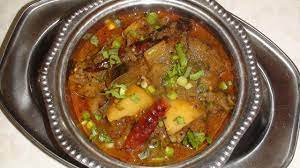

શાક બનાવવાની રેસીપી |
| ક્રમ |
વાંન્ગી ના નામ અને દેખાવ |
વાંન્ગી ની માહિતી |
| 1. |
 ગાંઠિયાનું શાક
ગાંઠિયાનું શાક |
આજની બદલાતી જીવનશૈલી અને ખાવાની ખોટી આદતો અનેક રોગોને સીધું આમંત્રણ આપી રહી છે. આજે લોકો જંક ફૂડ, ફાસ્ટ ફૂડ, કોલ્ડ ડ્રિંક્સ વગેરેનું ખૂબ જ ઉત્સાહથી સેવન કરવા લાગ્યા છે.જેના કારણે લોકો માત્ર સ્થૂળ જ નથી બની રહ્યા પરંતુ તેઓ આર્થરાઈટિસ જેવી પીડાદાયક બીમારીની લપેટમાં આવી રહ્યા છે.
[1] હા, સંધિવા અથવા સંધિવા રોગ આજે લોકોમાં ખૂબ જ ઝડપથી ફેલાઈ રહ્યો છે. આજે આ રોગ માત્ર વૃદ્ધોમાં જ નથી જોવા મળી રહ્યો, પરંતુ યુવાનો પણ તેની ઝપેટમાં આવી રહ્યા છે.
.
[2] સંધિવાથી પીડિત લોકોના શરીરમાં ખૂબ જ દુખાવો થાય છે. સંધિવા ઘૂંટણ અને હિપ હાડકાં પર વધુ અસર કરે છે. આ રોગથી પીડિત લોકોને તેમના હાથ અને પગને હલાવવામાં ઘણી મુશ્કેલીનો સામનો કરવો પડે છે.
[3]આજના આર્ટીકલમાં આપણે આર્થરાઈટીસ સંબંધિત મહત્વની બાબતોની ચર્ચા કરીશું. તો ચાલો આપણા આ લેખની શરૂઆત કરીએ... |
| 2. |

રીંગણ નું શાક |
રીંગણ બટેટા નુ શાક એક સ્વાદિષ્ટ, ઝડપી વાનગી છે. મસાલાવાળા બટાકા અને રીંગણની આ પ્રખ્યાત ગુજરાતી શૈલીની વાનગી ઘણા કૌટુંબિક કાર્યોમાં પીરસવામાં આવે છે.
[1] રિંગન બટેટા નુ શાક તરીકે ઓળખાતી શાકાહારી વાનગી બટાકા અને રીંગણા સાથે રાંધવામાં આવે છે જેને છૂંદેલા અને સમૃદ્ધ ટમેટાની ગ્રેવીમાં રાંધવામાં આવે છે.
[2]આ રસાવાલા શેકમાં તીખો સ્વાદ હોય છે અને તેને ગુજરાતી લગ્નો અને અન્ય ઔપચારિક પ્રસંગોમાં પીરસવામાં આવતી વાનગીની રીતે તૈયાર કરવામાં આવે છે..
|
| 3. |
બટાકાની સૂકી ભાજી |
બાફેલા બટેટા વડે બનાવેલી સ્વાદિષ્ટ સુખી ભાજી.
[1]બટાટા ભાજી એ મહારાષ્ટ્રીયન ભોજનમાંથી એક સરળ અને સરળ સાઇડ ડિશ (સબ્ઝી) છે.
[2] તે બટાકા અને મૂળભૂત મસાલાનો ઉપયોગ કરીને બનાવવામાં આવે છે અને ભારતીય ફ્લેટબ્રેડ જેમ કે પુરી અને ચપાતી સાથે સારી રીતે જોડાય છે. આ મૂળભૂત ભારતીય બટાકાની રેસીપી ખૂબ જ સર્વતોમુખી છે અને તેને પરાઠા, સેન્ડવીચ, ડોસા અને રોલ્સ/રૅપ માટે ભરવા તરીકે ફરીથી ઉપયોગમાં લઈ શકાય છે.
|
| 4. |
મગ નું શાક |
મગ નુ સાક/શાક એ મગની દાળ, ટામેટા અને લસણ વડે બનાવવામાં આવતી પરંપરાગત ગુજરાતી રેસીપી છે.
[1]તે ગરમ કરવા માટેની રેસીપી છે જે ઠંડા દિવસોમાં અને ગોળ ચોખા (ગુર વાલે ચાવલ) અથવા ગોળ અને નરમ ગુજરાતી રોટલી સાથે સારી રીતે તૈયાર કરવામાં આવે છે.
[2] આ પરંપરાગત કરીને લસનવાલા મેગ તરીકે પણ ઓળખવામાં આવે છે. ઇન્સ્ટન્ટ પોટ મેગ નુ સાકની રેસીપી શામેલ છે જેમાં મૂંગ બીન્સને પહેલાથી રાંધવાની જરૂર નથી.
|
| 5. |
ભીંડા નુ શક |
[1]ભીંડા નુ શાક એ એક સ્વાદિષ્ટ અને આરોગ્યપ્રદ ગુજરાતી વાનગી છે જે મગફળીના સ્વાદવાળા ભીંડા અને નિયમિત મસાલા-આધારિત મસાલાના મિશ્રણથી બનાવવામાં આવે છે..
[2]આ મસાલો બનાવવામાં સરળ છે અને સબઝીને એકદમ નવા સ્તરે લઈ જાય છે. વાનગીમાં થોડો મસાલેદાર, તીખો અને સ્વાદિષ્ટ સ્વાદ હોય છે અને તેને સાઇડ ડિશ તરીકે અથવા રોટલી અથવા ભાત સાથે મુખ્ય કોર્સ તરીકે સર્વ કરી શકાય છે..
[3]આ રેસીપીમાં, હું કેટલીક ટીપ્સ શેર કરીશ જે ભીંડીના લીલા રંગને જાળવી રાખવામાં અને તેને વધુ સ્વાદિષ્ટ બનાવવામાં મદદ કરે છે. તેને અજમાવી જુઓ!
|